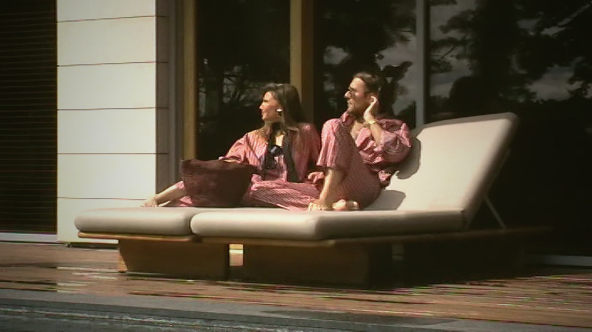
Reels
Strategy
Scroll
Лента через день, сторис каждый день, каждый ролик один раз и сильный с первого показа
Версия 4 от 17 ноября, обновлена в тот же вечер. Темы по-прежнему вперемешку, как у Planta Rosa. Лента не чаще чем через день, чтобы не надоедать подписчикам. Каждый ролик выходит один раз, одним файлом. Trial поставлен на паузу: он показывал ролики людям не из тех стран. Рост аудитории идёт через совместные посты, сторисы, блогеров и стилистов и прессу. Цель каждого монтажа — как можно больше просмотров, поэтому в каждом ролике есть хук и кинематографичность.
- Ритм
- 3–4поста в ленту в неделю, не чаще чем через день, в 19:00, всегда с соавторами. Сторис каждый день. Премьеры — тоже в 19:00
- Путь ролика
- Лента → сторисролик выходит в ленту один раз, в тот же вечер и в следующие дни повторяется в сторис. Trial — по желанию, как дополнительный тест, но в плане его нет
- По дате
- Фильмы (23 ноября и 24 декабря), Чёрная пятница 27 ноября, №13 по вторникам, ролик с Марией, карусель с Верой
- Объём
- 3–4файла в неделю. Запаса хватает с избытком, по плану ролики идут в ленту один за другим
- Второй пост дня
- Сторис: вещь из ролика крупно, название и где купить
- Не меняется
- Без FOMO, танцев и трендовых звуков. Скидка одна в году — Чёрная пятница −20%
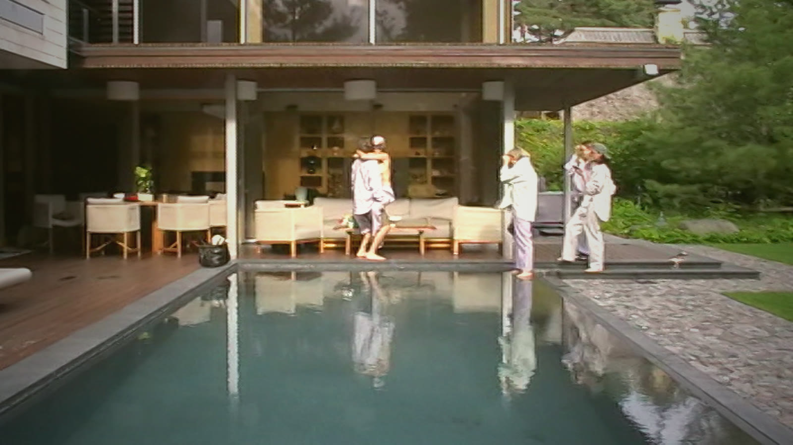
Удержание и пересылки, а не подписчики
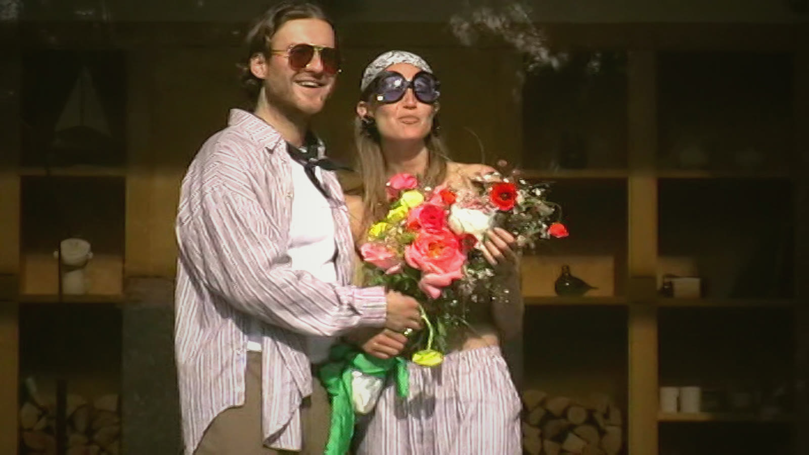
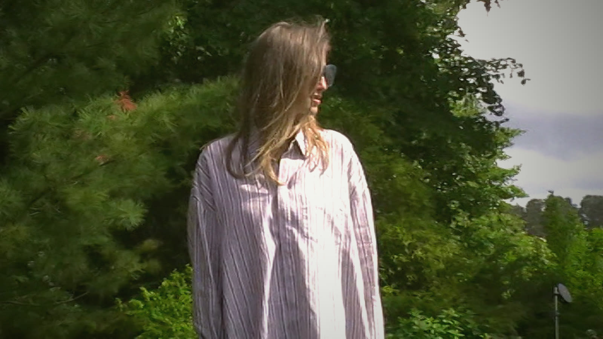
Глава Instagram Адам Моссери назвал три главных сигнала: время просмотра, лайки и пересылки на охват. Свежих официальных изменений в 2026 нет; цифры «весов» из блогов не подтверждены, мы их не используем.
- Время просмотра и досмотр
Хук за 3 секунды
Главный сигнал на обеих платформах. Ролики 12–20 с, финал похож на первый кадр — ролик зацикливается.
- Пересылки в Direct
Ролик, который хочется переслать
Для неподписчиков Instagram это главный сигнал, в TikTok пересылка сильнее лайка. Просим не словами, а самим роликом: красота, люди, подарок.
- Сохранения
Рубрики «как носить» и «ткань»
Учитываются на обеих платформах; полезное сохраняют.
- Поиск
Ключевая фраза в первой строке
TikTok читает подпись, текст в кадре и речь. Пишем словами покупателя: «striped pyjama shirt, Italian deadstock cotton».
- Оригинальность
Только чистый мастер-файл
Ролики с водяным знаком TikTok Instagram показывает хуже. Загружаем в обе сети файл из нашей папки.
Число подписчиков в TikTok на показы напрямую не влияет — новый аккаунт может получить охват с первого ролика. Официальной нормы частоты нет ни у одной платформы; для Instagram ориентир 3–5 роликов в неделю.
Сначала качество роликов, потом цифры роста
Цель за 26 недель — подписчики и обращения клиентов и бутиков из роликов. Цели по подписчикам ставим после 4 недель, когда будет база. Ниже — наши рабочие пороги для ролика 12–20 с; через 4 недели заменяем их своей медианой.
- Досмотр до 3-й секунды
- 60%+внимание
- Средний процент просмотра
- 50%+внимание
- Пересылки на 1000 охвата
- 10+распространение
- Сохранения на 1000 охвата
- 5+распространение
- Подписки на 1000 охвата
- 2+рост
- Профиль, ссылка, Direct
- Считаем по неделям, цель после базы
- Заказы и бутики
- В каждом заказе спрашиваем «как вы нас нашли»
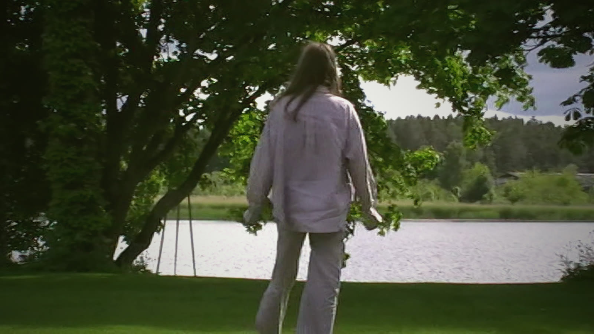
Семь рубрик — по одной на каждый день недели
Рубрика привязана к дню, поэтому две одинаковые темы подряд не выходят. Каждые 4 недели смотрим цифры: рубрика-лидер получает лишний день, слабая — отдаёт.
- Пн · Настроение, с 7 декабря — Бренд
- До 7 декабря парк AUTUMN25 и лето у озера. С 7 декабря по понедельникам девять роликов о бренде (REELS_BRAND), настроение уходит в резерв.На пересылки и знакомство с брендом
- Вт · Номер
- Одна рубашка по номеру: цвета, ткань, где купить. По вторникам же — три поста №13 в декабре.На визиты профиля и Direct
- Ср · Ткань и ремесло
- Раскрой, шов, мел, вышивка, дедсток, вода на ткани.На сохранения и доверие к цене €180–450
- Чт · Как носить
- Одна рубашка — разные образы, слои, разные люди.На сохранения и поиск
- Пт · Friday mood
- Самый красивый ролик недели или премьера фильма. У Planta Rosa «Friday mood» собрал вдвое больше среднего.На охват
- Сб · Люди и Италия
- Мария и Италия, мама и сын, модели, закулисье.Социальное доказательство и история бренда
- Вс · Подарок или медленное воскресенье
- Упаковка, открытка с номером, пакет, чемодан; после праздников — тихие ролики.На заказы к праздникам
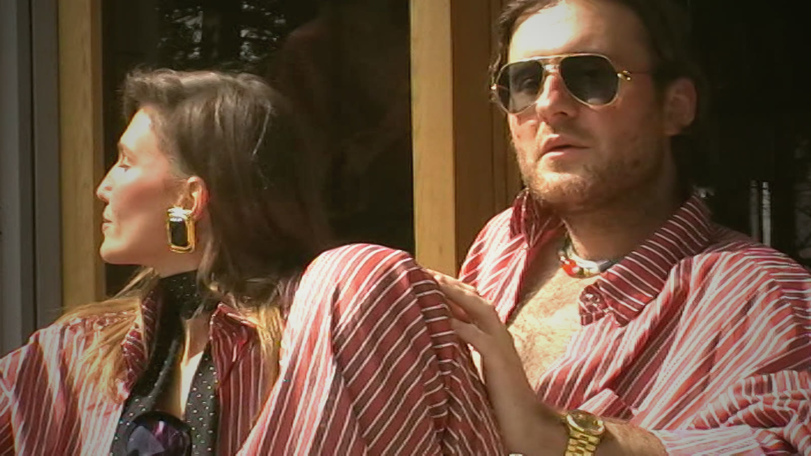
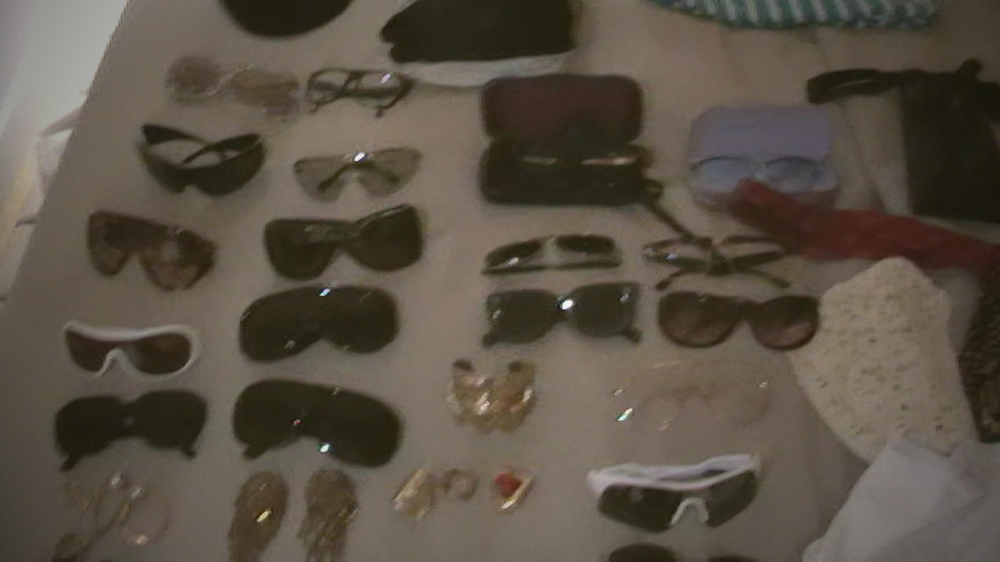
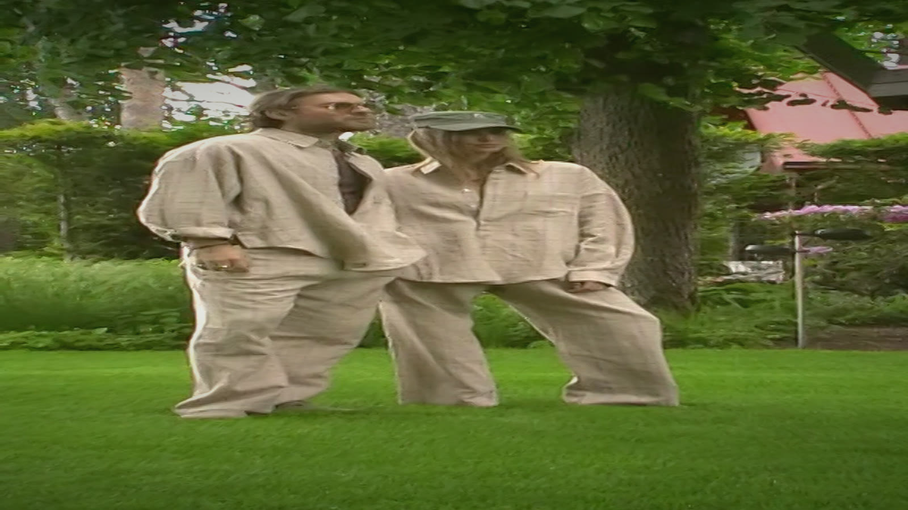
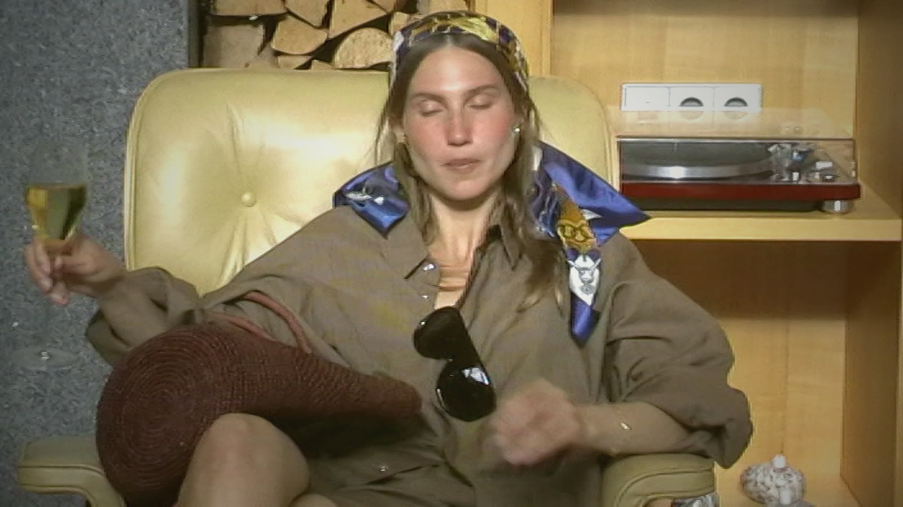
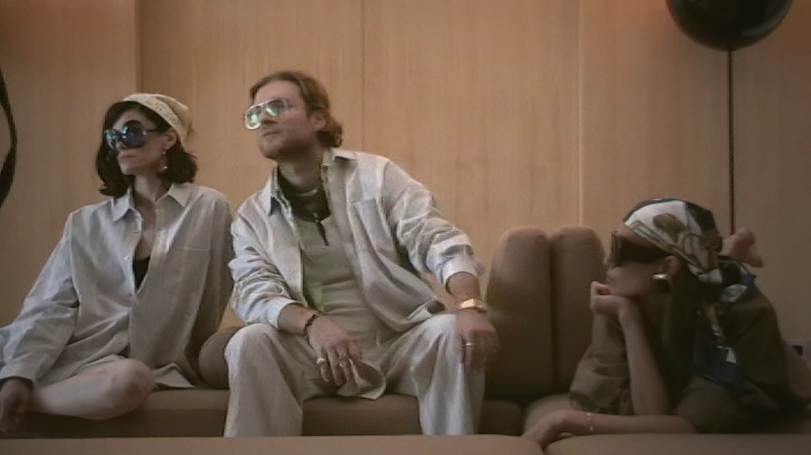
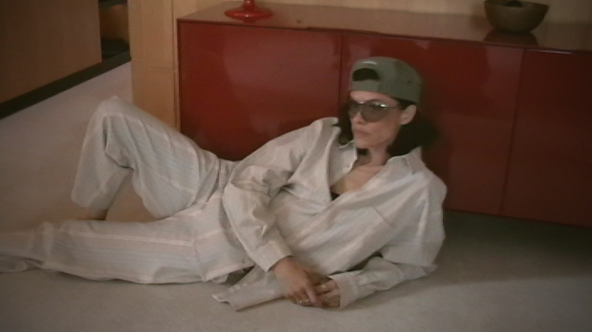
Основатели — Соня и Иван — по 1 ролику в месяц в рубриках «Ткань» и «Люди», когда появится запись.
Наша эстетика плюс хук
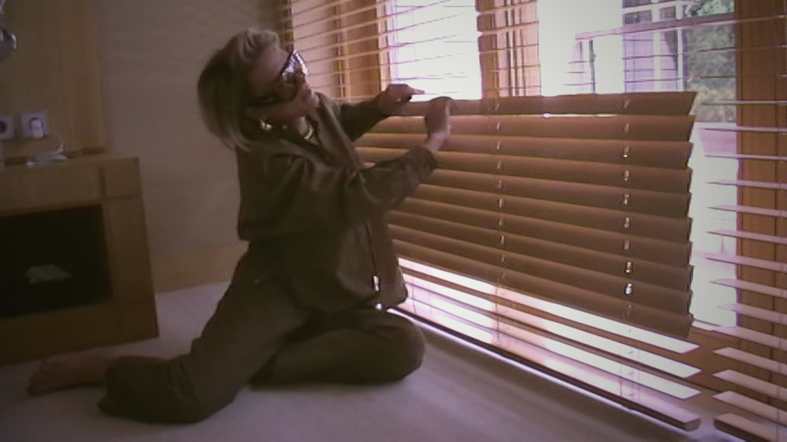
Плёночный цвет, зерно, голос бренда и жёлтые титры внизу — и больше никакого текста в кадре. Хук — это первые три кадра, первая фраза голоса и первая строка подписи. Финал — только логотип People First поверх кадра, без надписи.
Уже движется или наводится на резкость. Никогда не статичный старт и не титр.
Общий план меняем на крупный (или наоборот), другое место или ракурс.
Руки за делом, поворот лица, предмет, который ставит вопрос. Первая фраза голоса ложится на кадры 2–3.
Первые 5 с — кадры по 0,8–1,5 с, дальше спокойнее, по 1,5–2,5 с.
Длинный план с засветкой, логотип поверх без текста. Последний кадр похож на первый.
- Зумы: не больше одного наезда на ролик, два зума подряд — никогда, цифровой наезд не ставим на план короче 2 с
- Замедление только на плавном материале (60 к/с или интерполяция), не чтобы растянуть скучный дубль
- Один цветовой якорь на ролик: красная клетка, кремовая шерсть, тёмно-синий. Соседние кадры его делят
- Движение — это наводка на резкость, свайп, ручной наезд; трясущийся дубль движением не считается
- Один ракурс подряд не ставим, лицо под логотипом — тоже
- Длина
- 12–20 с для рубрик настроения, ткани, стиля, продукта; 20–40 с для закулисья
- Язык
- Английский в голосе и титрах; русская речь со съёмок — с английскими титрами
- Один файл
- Ролик не пересобираем, поэтому каждый обязан быть сильным с первой публикации. Готовые B-версии (W04, W17, W18, IT02 и четыре кандидата на 27 ноября) остаются в запасе, но по плану не нужны
Новые референсы, 14–15 ноября
- Fonzica · красная машина
Один предмет, один цвет
Около 24 склеек за 20 с, каждый план короче секунды. Общий план чередуется с макро (фара, капли на капоте, колесо), в кадре всегда что-то движется.
- Murachia · матча
Наводка на резкость и реплика
Открывается плавной наводкой, потом маленькая история с репликой «Hello?». Руки и ремесло крупно, продукт — только в конце.
- Debute London · ночь
Камера в руках и яркая вещь
Быстрые развороты, размытие движения. Платье — цветовой якорь, имя бренда только в последней секунде.
- Aliber Can · красная дверь
Человек проходит сквозь кадр
Насыщенный фон, герой входит, поворачивается, смотрит вверх. Финал — размытый крупный план под логотипом.
- Ether · плёнка 16 мм
Медленно и с выжженными краями
Ткань и профиль, белая вспышка в конце.
Имя вещи, одна строка, сайт
Формат Planta Rosa в нашем тоне: название вещи капсом, одна фактическая или поэтичная строка, сайт капсом. Без хештегов и без призывов «напишите в комментариях». Текст на английском, одинаковый для обеих сетей.
SIGNATURE NO. 6 — mustard, deep brown, cream.
80% virgin wool, 20% angora. Worn loose, soft on the shoulders.
PEOPLEFIRST.EU.COM
Пример для ST04 «Жёлтая клетка»
| Рубрика | Первая строка |
|---|---|
| Номер | SIGNATURE NO. 7 — steel blue, black, cream. |
| Ткань | ITALIAN DEADSTOCK WOOL — what is deadstock? |
| Как носить | NO. 6, THREE WAYS — sit down in it. |
| Настроение | the first cold morning. |
| Подарок | THE NUMBERED CARD — ready for you. |
| Чёрная пятница | -20% on every number, until monday. |
Цвета рубашек — только официальные (№6–№10). Состав ткани — только подтверждённый. Капсулам даём имена, как дропам у Planta Rosa: Signature (№6–№10), The Christmas Red (№13), Deadstock Checks, Summer at the Lake.
поста в ленту в неделю и сторис каждый день:
лента через день, чтобы не надоедать подписчикам, а рост идёт через соавторов и людей
| День | Время | Рубрика | TikTok | |
|---|---|---|---|---|
| Пн | 19:00 | Настроение | Лента, если день ленты | Да |
| Вт | 19:00 | Номер | Лента, если день ленты | Да |
| Ср | 19:00 | Ткань и ремесло | Лента, если день ленты | Да |
| Чт | 19:00 | Как носить | Лента, если день ленты | Да |
| Пт | 19:00 | Friday mood | Лента, если день ленты | Да |
| Сб | 19:00 | Люди и Италия | Лента, если день ленты | Да |
| Вс | 19:00 | Подарок или медленное воскресенье | Лента, если день ленты | Да |
- Лента через день, не чаще. Выходит в 19:00 с соавторами @ivansuprun и @sonya.suprun (в постах с Верой и Марией — и с ними, если они согласятся). Подписчики активнее всего в 18–21 (Восточная Европа). Два дня подряд только по датам: 30 ноября и 1 декабря
- Сторис каждый день. Каждый пост ленты дублируем в сторис в тот же вечер, плюс закулисье и вещь из ролика крупно. Вышедшие ролики (Fitting Room, №8, One Train, Who We Are) повторяем в сторис. Для The Cut сторис дали 37% просмотров, больше любого другого источника
- Карусели из фото — каждый второй слот ленты после 7 декабря (16 штук) и «Майами» 4 декабря. За последние 30 дней три карусели набрали по 4–10 тыс. просмотров, обычные ролики — 1,3–1,8 тыс. Источник — фото съёмок: обложка с логотипом, остальные слайды без текста, подпись той же схемы. Если фото хватает, можно добавить карусели и в дни без ленты (нужно твоё решение)
- Совместная публикация в каждом посте ленты: приглашаем @ivansuprun и @sonya.suprun до выхода (для фильма с Верой и ролика с Марией — и их аккаунты, если они согласны). Три лучших ролика аккаунта вышли именно так; за 4 недели сравниваем просмотры таких постов с обычными
- Рост без рекламы и без Trial. Trial показал ролик Ирану, России и Индии (101 зритель, 83% пропустили начало), а совместный ролик в ленте дошёл до Украины, Латвии, Польши и Испании. Рост идёт через совместные посты, раздачу 10 рубашек блогерам и стилистам из Европы, пресс-кит и рассылку прессе, свои каналы (рассылка, открытка с QR в посылках). Платный буст не планируем
- Прогрев перед фильмом: 19 ноября Vi2 «Со съёмки», 21 ноября новый монтаж с чемоданом и Heavy jacket, 18 и 22 ноября сторис с отсчётом, 23 ноября в 19:00 премьера фильма и закреп. Фильм с Верой (PF_VERA4) — в декабре, если Вера согласится; второе видео с Верой — около 5 февраля
- Чёрная пятница 27 ноября. 25 ноября в ленте ролик-анонс «Black Friday is coming» (BF3), 27 ноября сторис с этим роликом и серия про скидку 20%, 28 ноября карусель с фото Веры, 30 ноября W31 «Открытка» — последний день скидки. Даты и условия скидки подтвердить
- TikTok: предлагаю выкладывать каждый ролик один раз, в день выхода в ленту (нужно твоё решение)
- Сторис каждый день: вещь из ролика крупно, название и где купить — наш второй пост дня, как у Planta Rosa
- Первый час после выхода: отвечаем на все комментарии
- Время — стартовая гипотеза (UTC+2). Через 4 недели берём часы активности из статистики
Блоков больше нет — есть события поверх ежедневного микса
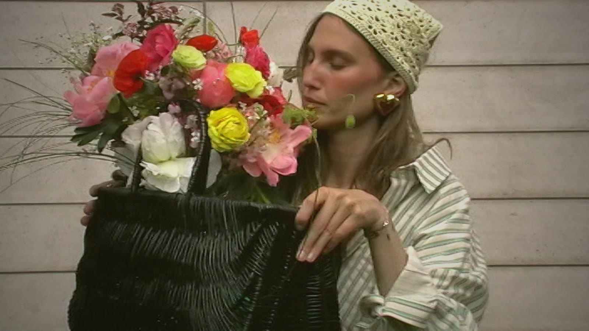
Премьеры и первая клетка
Бренд-фильм VIDEO 1 в закреп, на следующий день — фильм с Верой. 19 ноября — тишина и тизер в сторис.
Фильм и Чёрная пятница
23 ноября премьера фильма. 25 ноября анонс Чёрной пятницы, 27 ноября скидка 20% в сторис, 28 ноября карусель с Верой, 30 ноября последний день. После 30-го убираем −20% из подписей.
№13 по вторникам
1, 8 и 15 декабря — красная рубашка №13, 4 декабря — карусель «Майами». 15-го — последний день заказа к Рождеству.
Фильм «warmth»
Премьера в Сочельник, в закреп.
Весь готовый запас
Ролики из запаса выходят в ленту по одному в слотах между датами, ещё 16 слотов ленты занимают карусели из фото. Съёмка зимних рубашек 25 ноября, превью в сторис 26–27 ноября, в ленту после Чёрной пятницы.
Новая съёмка и второй круг
Новые вещи, ателье, основатели, вторые версии того, что сработало. Нужно около 7 новых идей в неделю.
Что берём у Planta Rosa и что оставляем своим
Московский бренд, основан в 2021 году. Около 250 млн ₽ выручки за первый год, 1,6 млрд ₽ за 2024-й. Несколько магазинов, приложение, сайт; цены 13 500–87 000 ₽. Главный канал — Telegram (10,9 тыс. подписчиков): продажи держатся на постоянных покупателях, блогерах и магазинах, а не на виральности. Мы прошли все их 65 постов с 9 октября по 12 ноября 2026.
- Частота
- ~2поста в день, каждый день, без перерывов
- Микс
- 0блоков: вещь, кампания, комплект, люди, настроение, практичное — вперемешку
- Лучший пост
- 4,5K«Friday mood» при среднем ~2,1K; кампания 3,3K, Хеллоуин 2,9K
- Продажа в каждом посте
- Название вещи капсом, одна строка, «на сайте, в магазинах и в приложении»
Берём
- Каждый день другая тема. Никаких блоков — так видно, что заходит
- Вещь по имени. Первая строка подписи — название рубашки капсом и её цвета
- Имена капсулам. У них Hippie, Punk, Arctic, California; у нас Signature, The Christmas Red, Deadstock Checks, Summer at the Lake
- Люди раз в неделю. У них инфлюенсеры, журналы, «Юля в Planta Rosa». У нас Мария, мама и сын, модели; дальше — 5–10 стилистов и блогеров с рубашками и отметки в профиле
- Friday mood — самый красивый ролик недели в пятницу
- Практичное: подарки, упаковка, открытка с номером, «где купить» в сторис
Оставляем своим
- Номерные рубашки из итальянского дедстока вместо стритвира с принтами и частых дропов
- Плёночный цвет, голос бренда и жёлтые титры — без надписей и стикеров
- Тихий тон: без скидок, кроме Чёрной пятницы, и без призывов «напишите в комментариях»
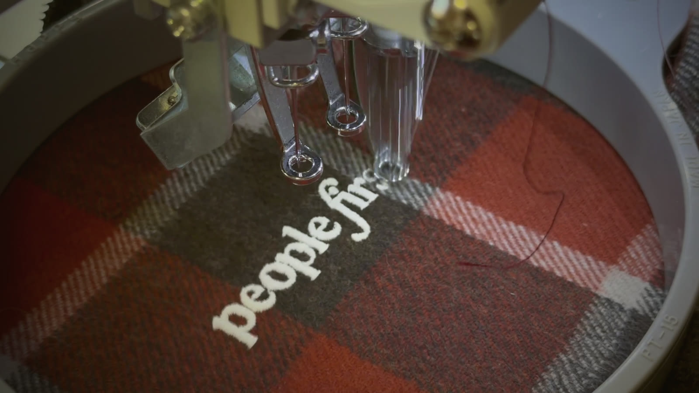
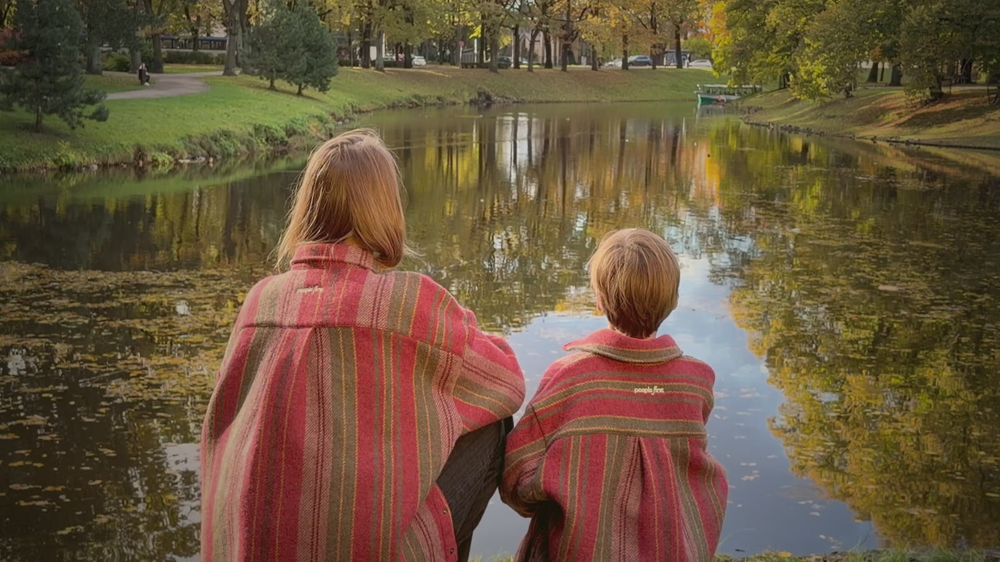
План ленты и сторис, 10 ноября — 8 февраля
Лента в 19:00 не чаще чем через день, сторис каждый день. Каждый ролик выходит один раз. Каждый пост ленты — совместная публикация. Строки 1–12 уже вышли или перенесены (вышедшие ролики повторяем в сторис). Trial в плане нет. Папки: W — REELS_AUTUMN, ST и JK — REELS_STUDIO, IT — REELS_ITALY, P — REELS_PRODUCER, цифры 01–20 — REELS (лето), фильмы — FILMS.
| № | Дата | Рубрика | Ролик | Первая строка подписи | Статус | |
|---|---|---|---|---|---|---|
| 1 | Вт 10 ноя · 12:30 | Как носить | W10 Одна стена, разные рубашки | same wall. same girl. | Trial | Вышел только в Trial (112 просмотров); в запасе |
| 2 | Вт 10 ноя · 19:30 | Ткань и ремесло | W01 Ткань | it starts with the cloth | Перенесён | Не выходил; в запасе |
| 3 | Ср 11 ноя · 12:30 | Номер | ST07 Сине-кремовая клетка (№7) | SIGNATURE NO. 7 — steel blue, black, cream | Trial | Вышел только в Trial (50 просмотров); в запасе |
| 4 | Ср 11 ноя · 19:30 | Люди и Италия | IT09 48 часов в Италии | 48 hours in italy | Перенесён | Не выходил; в ленту 19 ноября |
| 5 | Чт 12 ноя · 12:30 | Номер | ST04 Жёлтая клетка (№6) | SIGNATURE NO. 6 — mustard, deep brown, cream | Trial | Вышел только в Trial (65 просмотров); в запасе |
| 6 | Чт 12 ноя · 19:30 | Как носить | W32 Белая майка и рубашка | a plain white top | Перенесён | Перенесён в ленту 21 ноября |
| 7 | Пт 13 ноя · 19:30 | Friday mood | W07 Осень в шерсти | the first cold morning | Перенесён | Перенесён в запас |
| 8 | Сб 14 ноя · 19:30 | Люди и Италия | IT01 Ранний поезд в Милан | we don't buy cloth online | Вышел | Вышел 11 ноября (One Train); повтор в сторис 18 ноября |
| 9 | Вс 15 ноя · 19:30 | Подарок · медленное воскресенье | W03 Открытка с номером | why does a shirt need a number? | Перенесён | Перенесён в запас |
| 10 | Пн 16 ноя · 19:30 | Настроение | 02 Качели у озера | bare feet, linen, one swing | Перенесён | Перенесён в запас |
| 11 | Вт 17 ноя · 19:30 | Как носить | W32 Белая майка и рубашка | a plain white top | Перенесён | Перенесён в ленту 21 ноября (Signature №8 уже вышел 13 ноября) |
| 12 | Ср 18 ноя · 12:30 | Ткань и ремесло | W02 Раскрой | every shirt begins on this table | Вышел | Вышел 10 ноября; повтор в сторис |
| 13 | Ср 18 ноя · сторис | Сторис | Сторис: тизер фильма | — | Сторис | План |
| 14 | Чт 19 ноя · 19:00 | Люди и Италия | Vi2 Со съёмки | so if he looks good, he must be a brute? | Лента 19:00 | Готов |
| 15 | Чт 19 ноя · сторис | Сторис | Сторис: реел дня | — | Сторис | План |
| 16 | Пт 20 ноя · сторис | Сторис | Сторис: Fitting Room и №8 | — | Сторис | План |
| 17 | Сб 21 ноя · 19:00 | Куртка | P09 Чемодан и Heavy jacket (новый монтаж) | the heavy jacket. | Лента 19:00 | Готов · проверить на слух |
| 18 | Вс 22 ноя · сторис | Сторис | Сторис: отсчёт до фильма | — | Сторис | План |
| 19 | Пн 23 ноя · 19:00 | Премьера и запуск | Бренд-фильм VIDEO 1 | FROM PEOPLE, FOR PEOPLE — the first People First film. | Лента 19:00 | Готов · премьера, закреп |
| 20 | Пн 23 ноя · сторис | Сторис | Сторис: фильм вышел | — | Сторис | План |
| 21 | Ср 25 ноя · 19:00 | Чёрная пятница | BF3 Шёпот | Black Friday is coming. | Лента 19:00 | Готов · условия скидки подтвердить |
| 22 | Ср 25 ноя · сторис | Сторис | Сторис: съёмка | — | Сторис | План |
| 23 | Чт 26 ноя · сторис | Сторис | Сторис: превью съёмки | — | Сторис | План |
| 24 | Пт 27 ноя · сторис | Сторис | Сторис: Чёрная пятница | — | Сторис | План |
| 25 | Сб 28 ноя · 19:00 | Люди · Вера | Карусель с фото Веры | vera, in people first. | Лента 19:00 · карусель | Нужны фото |
| 26 | Сб 28 ноя · сторис | Сторис | Сторис: карусель | — | Сторис | План |
| 27 | Вс 29 ноя · сторис | Сторис | Сторис: напоминание | — | Сторис | План |
| 28 | Пн 30 ноя · 19:00 | Чёрная пятница · финал | W31 Открытка | last day: -20%. | Лента 19:00 | Готов |
| 29 | Вт 1 дек · 19:00 | Рождество · №13 (1/3) | ST01 Красная клетка — знакомство | NO. 13 — the christmas red. | Лента 19:00 | Готов |
| 30 | Чт 3 дек · 19:00 | Подарок | W04 Упаковка | folded by hand. | Лента 19:00 | Готов |
| 31 | Пт 4 дек · 19:00 | Рождество · №13 | Карусель «Майами» с красной рубашкой | — | Лента 19:00 · карусель | Нужны фото |
| 32 | Сб 5 дек · 19:00 | Люди · Мария | IT10 Живой голос Марии | everything started with her. | Лента 19:00 | Готов |
| 33 | Пн 7 дек · 19:00 | Подарок | Карусель · Подарок с номером | a gift with a number | Лента 19:00 · карусель | Готов |
| 34 | Вт 8 дек · 19:00 | Рождество · №13 (2/3) | ST02 Красная клетка на двоих | NO. 13 — one for you. one for them. | Лента 19:00 | Готов |
| 35 | Чт 10 дек · 19:00 | Чёрная пятница · тест | W17 Как надеть | wool, worn your way. | Лента 19:00 | Готов |
| 36 | Сб 12 дек · 19:00 | Люди | Карусель · Две рубашки, один человек за другим | two people. one check. | Лента 19:00 · карусель | Готов |
| 37 | Пн 14 дек · 19:00 | Чёрная пятница · тест | 17 Красные полоски на террасе | summer included. | Лента 19:00 | Готов |
| 38 | Вт 15 дек · 19:00 | Рождество · №13 (3/3) | ST03 Красная клетка из Италии | NO. 13 — last day to order for christmas. | Лента 19:00 | Готов |
| 39 | Чт 17 дек · 19:00 | Как носить | Карусель · Одна рубашка, пять способов | one shirt, five ways | Лента 19:00 · карусель | Готов |
| 40 | Сб 19 дек · 19:00 | Чёрная пятница | W39 Как падает шерсть | see how it falls. | Лента 19:00 | Готов |
| 41 | Пн 21 дек · 19:00 | Ткань и ремесло | Карусель · Шерсть вблизи | wool, up close | Лента 19:00 · карусель | Готов |
| 42 | Ср 23 дек · 19:00 | Чёрная пятница · семья | W18 Мама и сын у воды | matching, for the holidays. | Лента 19:00 | Готов |
| 43 | Чт 24 дек · 19:00 | Премьера · Сочельник | Бренд-фильм 02 «warmth» | warmth. | Лента 19:00 | Готов |
| 44 | Сб 26 дек · 19:00 | Номер | Карусель · Signature №6 | SIGNATURE NO. 6 — mustard, deep brown, cream | Лента 19:00 · карусель | Готов |
| 45 | Пн 28 дек · 19:00 | Чёрная пятница · подарок | P02 Пакет | a bag worth keeping. | Лента 19:00 | Готов |
| 46 | Ср 30 дек · 19:00 | Люди | Карусель · Год People First | the year in people first | Лента 19:00 · карусель | Готов |
| 47 | Пт 1 янв · 19:00 | Ткань и ремесло | IT02 Что такое дедсток | what is deadstock? | Лента 19:00 | Готов |
| 48 | Вс 3 янв · 19:00 | Номер | Карусель · Signature №7 | SIGNATURE NO. 7 — steel blue, black, cream | Лента 19:00 · карусель | Готов |
| 49 | Вт 5 янв · 19:00 | Как носить | P03 Одна девушка, четыре рубашки | one girl, every check. | Лента 19:00 | Готов |
| 50 | Чт 7 янв · 19:00 | Италия | Карусель · Склад, где всё начинается | the warehouse where it begins | Лента 19:00 · карусель | Готов |
| 51 | Сб 9 янв · 19:00 | Подарок · медленное воскресенье | W38 Сложить и положить открытку | ready for you. | Лента 19:00 | Готов |
| 52 | Пн 11 янв · 19:00 | Номер | Карусель · Signature №8 | SIGNATURE NO. 8 | Лента 19:00 · карусель | Готов |
| 53 | Ср 13 янв · 19:00 | Настроение | 02 Качели у озера | bare feet, linen, one swing | Лента 19:00 | Готов |
| 54 | Пт 15 янв · 19:00 | Люди | Карусель · Друзья, не близнецы | friends. not twins. | Лента 19:00 · карусель | Готов |
| 55 | Вс 17 янв · 19:00 | Ткань и ремесло | W13 У каждой свой номер | every shirt has a number. | Лента 19:00 | Готов |
| 56 | Вт 19 янв · 19:00 | Номер | Карусель · Signature №9 | SIGNATURE NO. 9 | Лента 19:00 · карусель | Готов |
| 57 | Чт 21 янв · 19:00 | Как носить | W10y Твоя рубашка, твой способ | wear it your way. | Лента 19:00 | Готов |
| 58 | Сб 23 янв · 19:00 | Ткань и ремесло | Карусель · Мелочи | the small things | Лента 19:00 · карусель | Готов |
| 59 | Пн 25 янв · 19:00 | Friday mood | 08 Кресло Eames | champagne, a scarf, a chair. | Лента 19:00 | Готов |
| 60 | Ср 27 янв · 19:00 | Номер | Карусель · Signature №10 | SIGNATURE NO. 10 | Лента 19:00 · карусель | Готов |
| 61 | Пт 29 янв · 19:00 | Люди и Италия | P05 Прогулка по парку | passing warmth between generations. | Лента 19:00 | Готов |
| 62 | Вс 31 янв · 19:00 | Как носить | Карусель · Зимние слои | winter layers | Лента 19:00 · карусель | Готов |
| 63 | Вт 2 фев · 19:00 | Подарок · медленное воскресенье | P01 Распаковка | still wrapped by hand. | Лента 19:00 | Готов |
| 64 | Чт 4 фев · 19:00 | Люди | Карусель · Со съёмки | from the set | Лента 19:00 · карусель | Готов |
| 65 | Сб 6 фев · 19:00 | Бренд | BP01 От людей, для людей | From people. For people. | Лента 19:00 | Готов |
| 66 | Пн 8 фев · 19:00 | Номер | Карусель · Все номера | every number, one family | Лента 19:00 · карусель | Готов |
Уже вышли — повтор в сторис
| Ролик | Вышел | Сторис |
|---|---|---|
| W02 The Cut | 10 ноября | по ходу недели 18–22 ноября |
| IT01 One Train | 11 ноября | 18 ноября |
| 11 Fitting Room и ST06 Signature №8 | 12 и 13 ноября | 20 ноября |
| BP08 Who We Are | 17 ноября | после фильма, 24 ноября |
| Yellow Check (№6), Same Wall Same Girl, Crème Blue and Quiet (№7) | 10–12 ноября, только в Trial | Выходили только в Trial (50–112 просмотров), в ленту пойдут позже в запасе |
| Ролик 15 ноября, смонтированный вручную | 15 ноября | Нужен исходный файл |
Что ещё нужно
| Что | Что нужно |
|---|---|
| Карусели из фото для ленты: 17 штук («Майами» 4 декабря и 16 по серии «Подарок», «Люди», «Номер», «Ткань», «Как носить», «Италия») | Нужна папка с фото съёмок (VIDEO PF/PHOTOS) или стоп-кадры из 4K-клипов; ближайшие — 4, 7 и 12 декабря |
| Хук-проход по роликам Чёрной пятницы и №13 | Пересобрать первые три кадра по правилам раздела 05, затем остальные по дате выхода |
| Номера в подписях студийных роликов | Подписать линейку A–T (STRATEGY/shirts_lineup.jpg) |
| Карусель «Майами» с №13, 4 декабря | Фото прошлого года |
| Пост №13 от 15 декабря | Последний день заказа к Рождеству |
| Ролики с Марией (IT03, IT04, IT10) | Её согласие и имя в подписи — IT10 выходит уже 5 декабря |
| Ролики Чёрной пятницы после 30 ноября | Убрать −20% из подписей и перевести в ленту |
| Студийные ST13–ST22 (Shooting First) | Собрать — 9 роликов запаса на февраль |
| Длинный фильм об Италии, 60–90 с | Монтаж: склад, Мария, поезд — после реакции на IT10 |
| Signature, пуховики, костюмы, ателье, основатели | Новая съёмка к февралю, около 7 роликов в неделю |
89 роликов и 3 фильма готовы — запаса хватит до 8 февраля
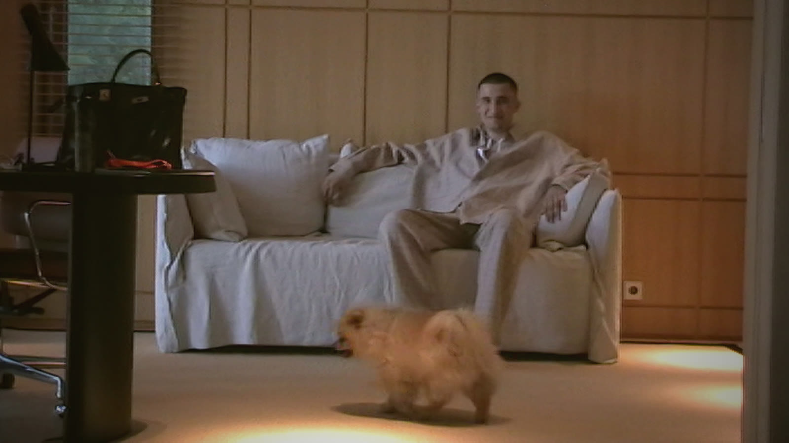
| Источник | Роликов | Статус |
|---|---|---|
| Лето у озера (REELS) и Vi2 | 21 | Готовы |
| Шерсть и парк, AUTUMN25 (REELS_AUTUMN) | 40 | Готовы |
| Идеи продюсера (REELS_PRODUCER) | 5 | Готовы · новый контрастный цвет, 8 ноября |
| Италия (REELS_ITALY) | 10 | Готовы · новый цвет, поезд перемонтирован |
| Студия: номера, линейка, закулисье, куртки (REELS_STUDIO) | 23 | Готовы · новый контрастный цвет |
| Бренд-фильмы (FILMS) | 3 | Готовы |
| Бренд: девять роликов о людях (REELS_BRAND) | 9 | Готовы · голос из фильма; в календаре по понедельникам с 7 декабря |
| Чёрная пятница (BLACK_FRIDAY): BF3 и BF3b | 2 | Готовы · в календаре 23 и 25 ноября |
| Резерв: настроение и ткань, ушедшие из календаря | 11 | W06, W11, W22, W08, W23, W25, 01, 03, 07, 13, 19 — идут после 8 февраля |
| Второй круг номеров и фильм об Италии | 15 | Монтаж из готового материала |
| Новая съёмка, 3–4 полудня | 25 | Signature, пуховики, костюмы, ателье, основатели |
| Итого идей до мая | 153 | |
| Карусели из фото (до 8 февраля) | 17 | Черновики подписей готовы; слайды собираем из фото съёмок |
Что снять — тем же камкордером
- Крупно ткани 74mt и 45mt, пуговицы, швы, бирки — по 10–15 с на каждую деталь
- Signature-рубашка и карточка подлинности с номером: руки достают из коробки, крупно номер
- Каждый новый товар на 2–3 людях разного возраста и фигуры: проходка, крупно лицо, деталь
- Ателье или стол закройщика: руки, ножницы, рулон ткани
- Основатели: 6–8 коротких ответов на вопросы на камеру или только голосом
- Звук съёмок живьём: реплики режиссёра и моделей — основа рубрики «Закулисье»
Лента через день требует около 3–4 роликов или каруселей в неделю. Студийные ST13–ST22 (Shooting First) смонтированы в плане, но ещё не собраны — это 9 роликов запаса. Новая съёмка 25 ноября даст зимние фото и каруселей хватит на январь.
Каждое воскресенье — цифры, каждые 4 недели — разбор
Где мы сейчас (Instagram, 18 октября — 16 ноября)
- 38,9 тыс. просмотров, из них 79,5% у людей, которые не подписаны; 6 483 подписчика, прирост за месяц −3
- Заходов в профиль 934, переходов по ссылке в шапке 115
- Посты и карусели дали 24 тыс. просмотров, ролики 13 тыс., сторис 1,3 тыс.
- С 10 ноября ежедневные просмотры выросли примерно вдвое; лучший ролик за месяц — совместный, 6,7 тыс.
- Охват есть, подписок мало: главная задача до Нового года — чтобы пришедшие по роликам люди запоминали бренд и заходили в профиль
Цифры ролика смотрим через 7 дней после выхода, отдельно для Instagram и TikTok: охват, досмотр до 3-й секунды, средний процент просмотра, пересылки, сохранения, подписки, визиты профиля, Direct. Плюс признаки ролика: рубрика, тип хука, длина, время, лицо в первом кадре.
| Если | То |
|---|---|
| До 3-й секунды досматривают меньше 60% | В ленту не идёт; в следующих похожих роликах другой первый кадр и другая первая фраза |
| До 3-й секунды досматривают 60% и больше | Идёт в ленту тем же файлом; такое начало берём за образец |
| Хук держит, но средний просмотр меньше 40% | Ролик короче на 2–3 с, герой-кадр раньше |
| Пересылок или сохранений вдвое больше медианы | Ещё 2–3 ролика в том же формате; этот — в сторис и в кандидаты на закреп |
| Рубрика 4 недели подряд в нижней трети | Забираем у неё 1 слот в неделю в пользу лидера |
| Ролик в TikTok сильнее, чем в Instagram (или наоборот) | Фиксируем формат за платформой, дальше они могут расходиться |
| Карусель за 7 дней набрала меньше 2 тыс. просмотров или меньше 5 пересылок | Следующую делаем другой серии, не повторяем тему и обложку |
| Посты с совместной публикацией за 4 недели не получили больше просмотров, чем обычные | Совместную оставляем только для событий и фильмов |
| Пришло сообщение от бутика или клиента | Записываем, с какого ролика; такие ролики — главный кандидат в ленту |
Выгрузки статистики можно присылать мне — я посчитаю и предложу правки на следующие 4 недели.
- Вера: согласие на соавторство в посте с её фото (аккаунт и фото), решение по фильму PF_VERA4 в декабре и по второму видео около 5 февраля. И файл ролика 15 ноября, смонтированного вручную
- Италия раньше Рождества: план ставит её по субботам с 14 ноября и Марию 5 декабря — это меняет решение от 8 ноября
- Номера рубашек: подписать линейку A–T и подтвердить, что ярко-красная клетка R — №13
- Последний день заказа к Рождеству — для поста 15 декабря
- Мария: можно ли показывать и подписывать имя?
- Условия Чёрной пятницы: даты скидки, что входит, ссылка
- Карусели: прислать папку с фото съёмок и сказать, добавлять ли карусели в дни без ленты
- TikTok: каждый ролик выкладываем один раз, в день выхода в ленту?
- Два события подряд (20–21 ноя, 30 ноя — 1 дек, 4–5 дек): оставляем ленту два дня подряд или сдвигаем второе на день?
- Есть ли аккаунт в TikTok и какое имя берём?
- Где главная аудитория и в каком часовом поясе: Балтия, Украина, Средиземноморье?
- Нужна ли русская или украинская версия подписей рядом с английской?
- Куда ведёт ссылка в профиле: сайт pplfrst.studio, магазин, Direct?
- Кто публикует ролики и отвечает на комментарии в первый час?
- Когда снимаем Signature, пуховики и костюмы — первые такие ролики нужны к февралю
- Какие факты о тканях можно называть: фабрика, год, состав, тираж расцветки?
- Есть ли права на голос диктора из VIDEO 1 и на лица всех моделей в публикациях?
Внутренние: годовой план People First 2026–2027, контент-план сентябрь–декабрь 2026, пресс-релиз. Внешние — в основном блоги маркетинговых сервисов; официальный источник только по Trial Reels. Поиск — 3 ноября 2026.
- Planta Rosa — Telegram, посты 9.10–12.11.2026
- Planta Rosa — сайт и цены
- vc.ru — маркетинговый разбор Planta Rosa
- FRWF — Чемпионы ретро-спорта: Planta Rosa
- TRN — что происходит с брендом Planta Rosa
- Kontentino — перевод Trial-ролика в ленту
- Buffer — частота публикаций, 2,1 млн постов
- Instagram Creators — Trial reels
- Dataslayer — Instagram Algorithm 2026
- Blckalpaca — Watch time and sends per reach
- Postey — TikTok Algorithm 2026, what's confirmed
- SocialPilot — TikTok Algorithm 2026
- SocialPilot — How often to post on Instagram
- Kontentino — How often to post on Instagram
- Social Media Today — Reach of reposts with TikTok watermark
- CapCut — TikTok caption keywords and search
People
First